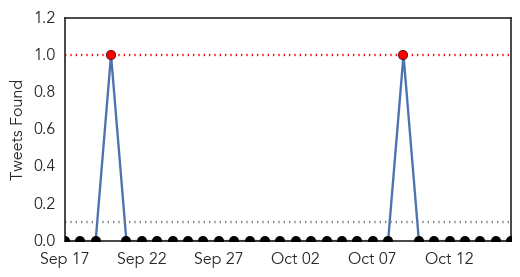
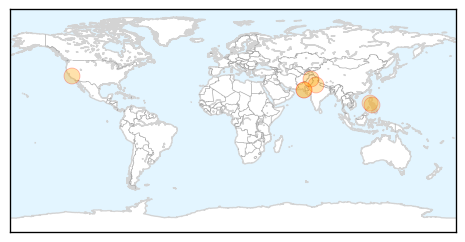
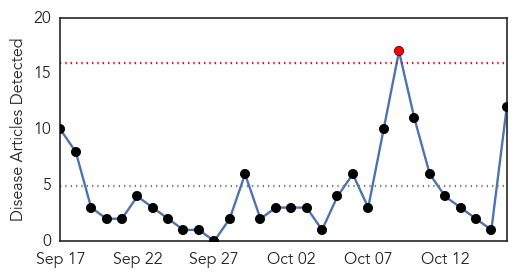
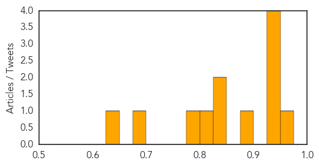

Dengue Fever
30-Day Web Trend
0 alerts, 3 warnings

30-Day Twitter Trend
0 alerts, 0 warnings

Article Locations
Article Confidences

Top Articles:
- 0.987
- Invasive mosquitoes causing illness in California
- 0.963
- Dengue cases: Delhi sets record in 20 years
- 0.878
- Dengue updates: Thailand, Malaysia and the Philippines
- 0.869
- Deadly bite: Dengue fever claims life of young man
- 0.828
- City Health Office raises Dengue alert
- 0.813
- Dengue fever: Baguio City reports 10-fold increase in cases in September
- 0.800
- Six die from dengue in Karachi during 2015
- 0.561
- Wasa given best performance shield
- 0.502
- Anti-dengue measures discussed
Top Tweets:
-
No tweets found for Oct 16, 2015
Measles
30-Day Web Trend
1 alerts, 0 warnings

30-Day Twitter Trend
0 alerts, 0 warnings

Article Locations

Article Confidences
Top Articles:
- 0.953
- Unvaccinated Americans Continue to Pose Measles Risk
- 0.945
- More than 400 dead in southeast Congo measles outbreak
- 0.943
- More than 400 dead in southeast Congo measles outbreak: U.N.
- 0.931
- Human trials of HIV vaccine usher in new era of public health
- 0.931
- Controversies and challenges of vaccination: an interview with Elizabeth Miller
- 0.886
- Deadly measles outbreak kills 400 in southeast Congo
- 0.838
- Greater than 400 dead in southeast Congo measles outbreak: Not
- 0.827
- Measles Outbreak in Congo Has Death Toll of More than 400
- 0.820
- ‘Don’t condemn religious objectors’
- 0.776
- UC Berkeley student exposes commuters, classmates to measles
- 0.694
- At least 428 People Killed, 30,000 Infected In Mining Region, UN Says
- 0.631
- Over 400 dead of measles outbreak in Congo
Top Tweets:
-
No tweets found for Oct 16, 2015